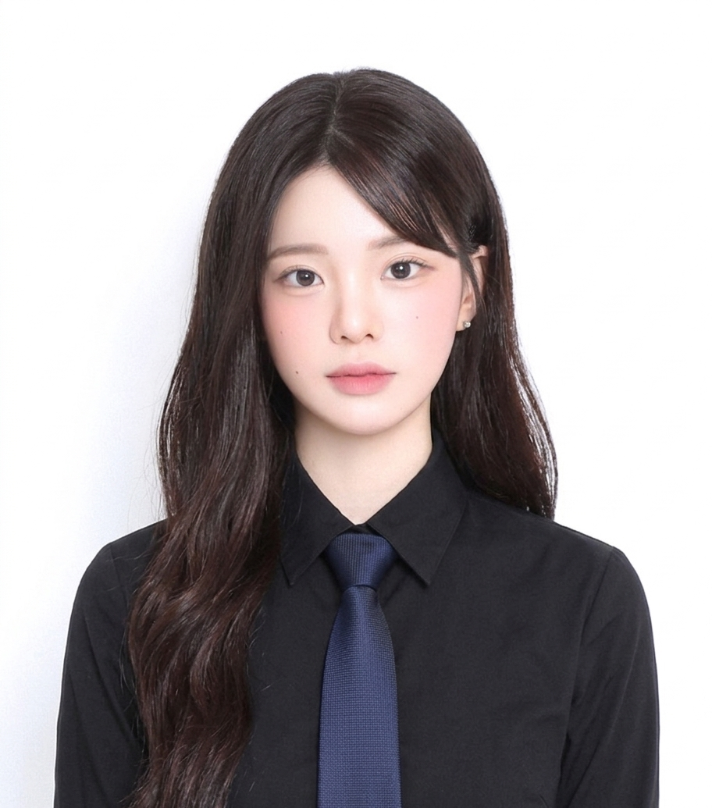

About me
자기소개

사용자의 마음을 움직이는 감성적인 디자인과 비즈니스 효율을 극대화하는 구조적 설계를 지향합니다.
불필요한 장식을 배제한 여백 속에서, 데이터 기반의 논리로 뼈대를 세우고 연지색의 따뜻한 온기로 경험을 완성합니다.
저는 단순한 시각화를 넘어, 브랜드의 본질을 가장 효율적인 방식으로 전달하는 최적의 경험을 만듭니다.
다양한 역량의 조화

"조화를 통해 시너지를 만드는 가능성"
다양한 색의 꽃들이 모여 하나의 아름다운 정원을 이루듯, 저는 개발의 논리와 디자인의 감성, 그리고 마케팅적 사고를 조화롭게 융합할 줄 아는 인재입니다.
서로 다른 분야의 경계를 허물고 소통하며, 단순히 작동하는 결과물을 넘어 사용자에게 깊은 공감을 이끌어내는 가치를 창출합니다.
끊임없이 변화하는 디지털 환경 속에서 매 순간 새로운 기술을 스펀지처럼 흡수하며 팀과 함께 폭발적으로 성장하는 것이 저의 가장 큰 강점입니다.
유연한 사고

트렌드를 읽는 힙(Hip)한 시선으로 남들과는 조금 다른 각도에서 세상을 바라봅니다.
정답에 갇히지 않는 유연한 발상을 통해 고정관념이라는 틀을 깨고 상황에 맞는 최선의 해결책을 고민합니다.
딱딱한 이론보다 유연한 사고방식을 바탕으로 사용자에게 즐거운 디지털 경험을 선사하는 마케팅 엔지니어가 되고자 합니다.